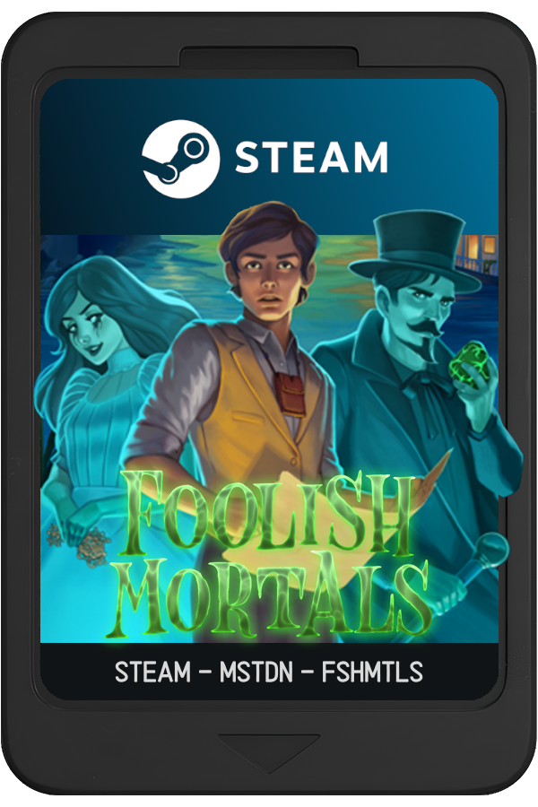

Foolish Mortals
Every archived year-end list appearance, including placement and points earned.
About the Game
DEVIL'S ROCK An island off the coast of Louisiana 1933 “Ever since I heard of the treasure inside Bellemore Manor I've been obsessed by it. People said the house was still haunted by the ghosts of the wedding that disappeared there decades ago, but if the ghosts knew where the treasure was hidden, I just had to ask them. But there's more to the treasure than I could have ever expected, and now I've awakened a household of spirits who don't mind that they're dead, and an evil phantom determined to find the treasure before I do.Fixing the situation won't just mean getting to the treasure first, but also figuring out what happened on the island all those years ago. But I have a feeling that in order to do that, I'll have to die too.”– The Diary of Murphy McCallan A merry & macabre mystery puzzle game set on the enigmatic island of Devil's Rock in 1930s Louisiana Spooky not scary - a cozy game with no deaths, dead-ends, or scares Classic-style adventure game puzzles with over 100 items to pick up and use - plus a built-in hint systemPiece together the clues to find out what happened in Bellemore Manor thirty years agoMore than 75 gorgeous hand-drawn locations at full HD resolution, plus dozens more paintings, documents, and other details to investigateA full-length experience, with a gameplay time equal to Monkey Island and Broken SwordHigh quality animation from a professional animation studio More than two hours of original music, including an interactive big band songFully voiced, with more than 35 characters to interact withStarring AJ LoCascio as Murphy McCallan (Marty McFly in Back to the Future: The Game, Han Solo in LEGO Star Wars: The Skywalker Saga, Gambit in X-Men ’97, and many more).
| Released | 2025-11-05 |
|---|---|
| Developer | Inklingwood Studios |
| Publisher | Inklingwood Studios |
| Genres | Adventure |
| Platforms | macOS, PC |
SingleplayerSteam AchievementsAtmosphericStory Rich2DThird PersonRetroPoint & ClickMysteryDark FantasyMusic1990's
Game information provided by RAWG.
Points by Year
List History
| Year | Source | List | Placement | Points |
|---|---|---|---|---|
| 2025 | The Review Geek | 15 Best Video Games of 2025 | TheReviewGeek Recommends | 11 | 3 |